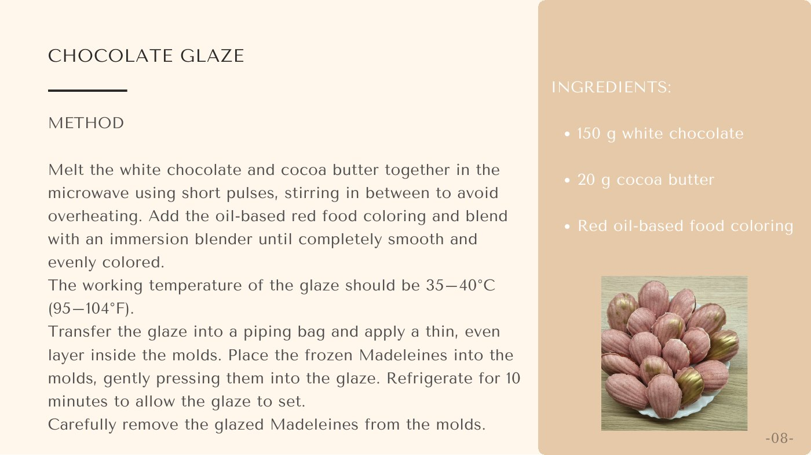

Editorial Design & Educational Materials
Homemade Baking Guides
A coordinated visual series for home bakers.

My role
Visual design and page layout.
Format
Two landscape PDF guides, 15 and 16 pages.
Audience
Home bakers following detailed recipes.
The task
Present detailed baking instructions in a clear format that readers can follow step by step.
Design approach
A warm cream and beige palette connects both guides. Large headings, consistent page numbering and illustrations organise the recipes and preparation notes.
Madeleines guide
View Madeleines Guide

Medovik cake guide
View Medovik GuideResult
Two complementary guides with a shared layout system and individual cover illustrations.